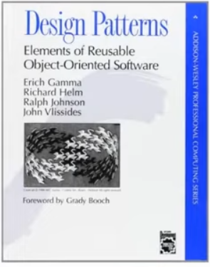
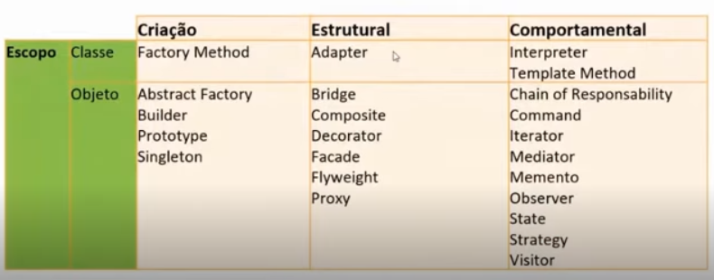

RideSharing é um produto da Localiza que atende aos motoristas de aplicativo. Esse produto usa diversas stacks para cloud, front, back, mensageria, metodologias de versionamento, testes, bancos de dados e containers.
São práticas e soluções consolidadas com o tempo e com o uso para resolver problemas recorrentes. É apenas uma orientação do que fazer, não uma solução definitiva pro seu problema específico.
Os autores desse livro são conhecidos como "Gang of Four" (GOF). Esse livro é conhecido como a bíblia do assunto. Catalogaaram 23 patterns divididos em 3 grupos:
padrão de construção - trata das questões de contrução do objeto e referências
Abaixo uma representação dos padrões de cada um dos grupos
No hands-on do curso vamos ver o padrão Repository, que não é relacionado pelo GOF. Além do repository veremos singleton e facade, aquele de criação e este estrutural
O hands on será em cima deste código.
O singleton é o compartilhamento a mesma instancia a partir do Guid, que é o mesmo identificador, em requisições diferentes. Geralmente para recursos compartilhados, como logs.
Repository é um crud, que pode ser em qualquer opção de banco, onde a camada de aplicação não se importa em como os dados serão salvos ou acessados. Isolamento da aplicação e da camada de dados.
O Facade pega os dados da api e transforma em um conjunto de dados diferente de outros.
Os design patterns mais utilizados são Adapter, Factory, Observer, Strategy, Builder, State e Singleton